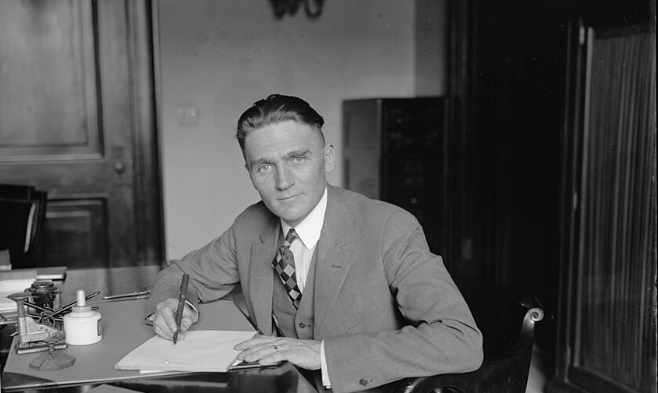
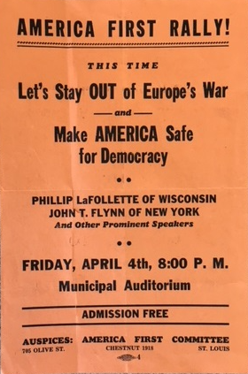
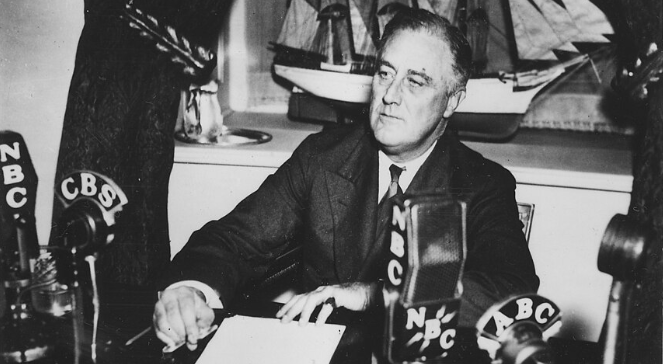
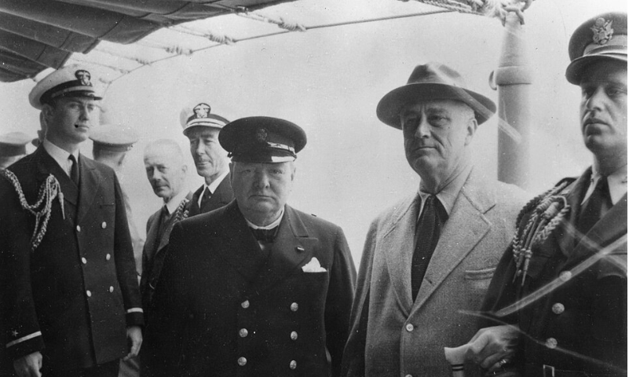
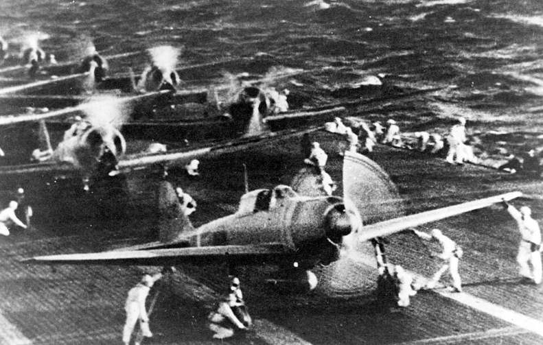
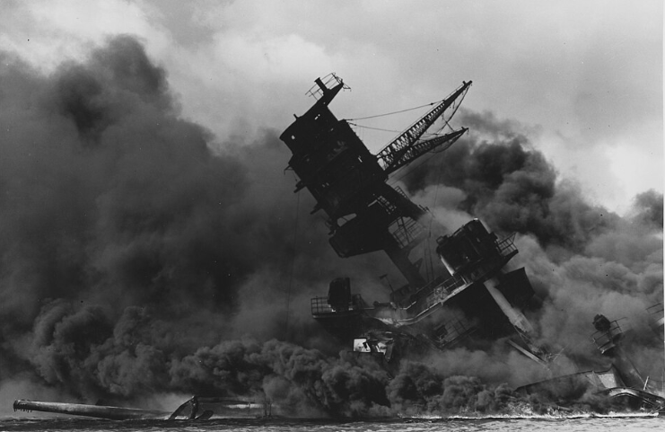
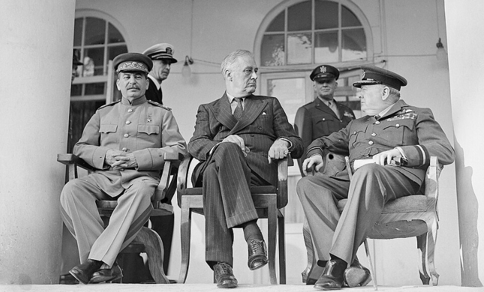

Core Objectives
- Trace the evolution of U.S. policy from the Neutrality Acts to the Lend-Lease Act and the Atlantic Charter.
- Analyze the impact of the Japanese attack on Pearl Harbor on American public opinion and national unity.
- Compare the strategic goals of the "Big Three" (Roosevelt, Churchill, Stalin) within the Grand Alliance.
Key Terms
Isolationism | America First Committee | Charles Lindbergh | Cash and Carry | Lend-Lease Act | Arsenal of Democracy | Atlantic Charter | Four Freedoms Speech | Pearl Harbor | The Big Three | Embargo | USS Arizona | Winston Churchill
Introduction| From the Fortress of Neutrality to Global Leadership
In the wake of the Great War’s trauma, many Americans sought refuge in a policy of strict non-intervention, viewing foreign conflicts as a threat to domestic stability. However, as totalitarian regimes expanded across Europe and Asia, the "fortress America" ideal was increasingly challenged by the reality of a shrinking world. This chapter explores the intense political struggle between those who wished to remain isolated and those who believed that the survival of democracy required American intervention. Ultimately, the shock of a surprise attack transformed a divided nation into the pivotal leader of a global alliance dedicated to the defeat of tyranny.
![A highly detailed historical illustration showing a bustling 1930s American city street in a 16:9 landscape orientation. In the foreground, citizens in period-accurate clothing are gathered around a corner newsstand. The newspapers feature bold, alarming headlines about military invasions in Europe and Asia. The lighting contrasts the warm, peaceful glow of the American street with dark, stormy clouds gathering in the deep background sky, symbolizing the encroaching global conflict challenging the nation's strict isolationist mentality.](assets/Visual_1.png)
In the aftermath of World War I, the United States sought to insulate itself from international conflicts to preserve domestic tranquility. However, the aggressive expansion of totalitarian regimes across the globe increasingly threatened this policy of strict non-intervention, forcing a profound reevaluation of the nation's responsibility on the world stage.
The Fortress Crumbles—The Rise of Isolationism
During the 1930s, the United States was deeply committed to avoiding foreign entanglements, a sentiment fueled by the economic misery of the Great Depression and a cynical view of the causes of World War I. Through the findings of the Nye Committee and the passage of several Neutrality Acts, the nation attempted to legislate its way out of future conflicts. However, as the Axis powers began their aggressive conquests, figures like President Roosevelt began to argue that the spread of "international lawlessness" could not be ignored, even as powerful groups like the America First Committee fought to keep American shores untouched by war.
The Deep Roots of Neutrality
As the 1930s dawned, the United States was a nation looking inward. The trauma of World War I, which had ended only a little more than a decade earlier, remained a vivid and painful memory for millions of families. The promise that the Great War would make the world "safe for democracy" appeared to have been a cruel illusion. Instead of a stable peace, Americans saw a Europe descending back into the same old patterns of ethnic hatred, secret treaties, and territorial greed. This sentiment solidified into a powerful movement known as Isolationism, the belief that the United States should avoid all foreign entanglements and focus exclusively on its own domestic problems, particularly the ongoing misery of the Great Depression.

The intellectual foundation of this movement was strengthened by the findings of the Nye Committee. Between 1934 and 1936, Senator Gerald Nye of North Dakota led a sensational investigation into the causes of American entry into World War I. The committee’s reports suggested that the United States had not fought for high moral principles, but rather because greedy bankers and arms manufacturers—whom the press nicknamed "merchants of death"—had pushed the nation into war to protect their foreign investments and profits. While the committee’s findings were often based on a selective reading of history, they resonated deeply with a public that was struggling to put food on the table. If war was simply a racket for the wealthy, many argued, then American blood should never again be shed on foreign soil.
This atmosphere of suspicion led Congress to pass a series of Neutrality Acts designed to prevent the nation from being "tricked" into war again. The Neutrality Act of 1935 prohibited the export of "arms, ammunition, and implements of war" to any belligerent nation and forbade Americans from traveling on the ships of nations at war. The 1936 act added a ban on loans or credits to belligerents. In 1937, as the Spanish Civil War raged, Congress extended these bans to civil wars and introduced a "cash-and-carry" provision for non-military goods. These laws were intended to act as a legal fortress, insulating the United States from the rising tides of violence in Europe and Asia.
President Franklin D. Roosevelt, however, viewed these developments with increasing dread. He recognized that the rise of totalitarian regimes in Germany, Italy, and Japan posed a direct threat to the global balance of power and eventually to American security. In October 1937, Roosevelt traveled to Chicago—a stronghold of isolationist sentiment—to deliver his "Quarantine Speech." He compared the spread of international lawlessness to a contagious disease and suggested that peaceful nations must act together to "quarantine" aggressors. The public backlash was immediate and fierce. Roosevelt was accused of being a warmonger, and his mail was flooded with protests. Chastened by the response, the president realized he could not lead the nation into international cooperation until he had successfully shifted public opinion.
Checkpoint
1. How did the findings of the Nye Committee influence American public opinion in the 1930s?
The Great Debate: Isolation vs. Intervention
The outbreak of war in Europe in September 1939 forced the isolationist debate into every American home. When Hitler’s forces crushed Poland and then bypassed the Maginot Line to conquer France in the summer of 1940, the "fortress America" argument faced its greatest test. If Great Britain fell, the entire Atlantic Ocean would become a German lake, and the United States would be left to face the combined might of the Axis powers alone. This realization led to the formation of two massive, competing political organizations that fought for the soul of American foreign policy.

The most influential isolationist group was the America First Committee. Founded in 1940, it boasted hundreds of thousands of members and was supported by powerful figures in business and government. Their argument was straightforward: the United States should build up its own defenses to such a degree that no one would dare attack, but it should otherwise remain strictly neutral. They argued that any attempt to aid Britain was a "back door to war" and that Roosevelt was using the crisis to seize dictatorial powers for himself. They believed that a British defeat, while tragic, did not constitute an existential threat to the United States.
The face of the America First movement was Charles Lindbergh, the legendary aviator who had been the first to fly solo across the Atlantic. Lindbergh’s celebrity gave the movement immense credibility, but his rhetoric grew increasingly controversial. After visiting Germany and being decorated by the Nazi government, Lindbergh began to argue that the German Luftwaffe was invincible and that Britain’s cause was hopeless. In a notorious 1941 speech in Des Moines, Iowa, he identified "the British, the Jewish, and the Roosevelt administration" as the three groups pushing the country toward war. His flirtation with anti-Semitic tropes and his apparent admiration for German efficiency deeply divided his audience and eventually tarnished the isolationist cause.
Opposing the isolationists was the Committee to Defend America by Aiding the Allies. Interventionists argued that the United States could not survive as a "lone island" of democracy in a world dominated by force. Roosevelt skillfully navigated this political minefield by moving in small, incremental steps. In 1939, he convinced Congress to revise the Neutrality Acts to allow for "Cash and Carry" on military equipment. This meant that Britain and France could buy American weapons if they paid in cash and transported them on their own ships. While the policy was technically neutral, it clearly favored the Allies because the British Royal Navy controlled the Atlantic. Every step Roosevelt took was framed as a defensive measure—a way to help others fight so that American boys would not have to.
Checkpoint
1. What was the core argument of the America First Committee regarding World War II?
The Shift to Intervention
By 1940, the collapse of France and the isolation of Great Britain forced a significant shift in American policy from strict neutrality to "all aid short of war". Roosevelt navigated fierce domestic opposition to provide critical resources to those fighting the Axis, framing the conflict not just as a matter of security, but as a moral crusade for universal human rights. This period saw the United States transition into a central supplier of military equipment, effectively acting as a "de facto" leader of the anti-fascist cause even before a single American soldier was officially committed to combat.
The 1940 Election and the Arsenal of Democracy
The debate over intervention coincided with the presidential election of 1940. Breaking with more than a century of tradition, Roosevelt decided to run for an unprecedented third term, arguing that the international crisis required experienced leadership. His Republican opponent, Wendell Willkie, was a former Democrat who actually shared many of Roosevelt’s interventionist views. Because both candidates supported aid to Britain and the first peacetime draft in U.S. history, the election did not result in a total repudiation of Roosevelt’s foreign policy. Roosevelt won a decisive victory, and with the mandate of a third term, he began to speak more boldly about America's role in the world.

In late December 1940, Roosevelt delivered one of his most famous fireside chats. He told the American people that the United States must become the "Arsenal of Democracy." He warned that if Britain fell, the Axis powers would control the resources of three continents and the oceans, leaving the United States vulnerable to economic and military strangulation. To explain his plan for increased aid, he used a simple, homey analogy: if your neighbor’s house is on fire, you don't argue about the price of your garden hose. You lend it to them so they can put out the fire before it spreads to your own house. This analogy helped shift the focus from the cost of the aid to the shared danger of the "fire."
In January 1941, Roosevelt delivered his State of the Union address, which became known as the Four Freedoms Speech. He moved the debate beyond mere national security and into the realm of human rights. He argued that the war was a struggle to preserve four essential human freedoms: freedom of speech, freedom of worship, freedom from want, and freedom from fear. This framing gave the American war effort a moral mission. By defining the conflict as a crusade for universal values, Roosevelt prepared the public to accept a massive commitment of resources to the Allied cause.
Checkpoint
1. How did President Roosevelt use the analogy of a neighbor's burning house to shift public opinion?
The Lend-Lease Act and the Atlantic Charter
By early 1941, Great Britain was nearly bankrupt and could no longer afford the "cash" part of "cash and carry." Roosevelt responded by proposing the Lend-Lease Act. This legislation gave the president the power to "sell, transfer, exchange, lease, lend, or otherwise dispose of" any defense article to any government whose defense the president deemed vital to the defense of the United States. Isolationists in Congress fought the bill fiercely, with Senator Burton K. Wheeler calling it a "New Deal for war." Despite the opposition, the bill passed in March 1941. The United States began funneling billions of dollars' worth of tanks, planes, and food to Britain, and later to the Soviet Union after Hitler invaded Russia in June.

As the United States moved closer to active combat, Roosevelt and Winston Churchill sought to formalize their shared vision for the future. In August 1941, the two leaders met secretly on a warship off the coast of Newfoundland. They emerged with the Atlantic Charter, a joint declaration of war aims that echoed Woodrow Wilson’s Fourteen Points. The Charter pledged that both nations would seek no territorial gains, would support the right of all people to choose their own government (self-determination), and would work for a post-war world with improved labor standards, economic cooperation, and freedom from fear and want. This document was a remarkable commitment, considering the United States was still technically at peace. It signaled that the U.S. was already acting as a de facto leader of the anti-fascist alliance.
While the Atlantic Charter looked toward the future, the present was becoming increasingly dangerous. Roosevelt ordered the U.S. Navy to escort merchant ships as far as Iceland and issued a "shoot on sight" order after German U-boats began attacking American destroyers like the Greer. By October 1941, following the sinking of the Reuben James with the loss of more than 100 American sailors, the United States was engaged in an undeclared naval war with Germany in the North Atlantic. The isolationist wall was crumbling, but it would take a shock from the Pacific to finally bring it down.
Checkpoint
1. How did the Lend-Lease Act change the United States' role in the global conflict?
The Day of Infamy and the Grand Alliance
The debate between isolationism and interventionism was ended abruptly by the Japanese attack on Hawaii, an event that unified the American public in a way no political argument could. Faced with a global war on two fronts, the United States joined forces with Britain and the Soviet Union to coordinate a massive military and industrial strategy. Despite deep ideological differences, these allies prioritized the defeat of Nazi Germany while mobilizing the full industrial might of the American economy to overwhelm the Axis powers.
The Road to Pearl Harbor
While American attention was largely fixed on Europe, the most immediate threat was developing in the Pacific. Throughout the 1930s, Japan had pursued a policy of aggressive expansion in China and Southeast Asia, seeking to create a "Greater East Asia Co-Prosperity Sphere." Japan’s military leaders, who had effectively taken control of the government, viewed the United States as the primary obstacle to their regional dominance. The United States had responded to Japanese aggression by providing aid to the Chinese government and by imposing a series of increasingly severe economic sanctions.

The turning point came in July 1941, when Japan occupied southern French Indochina. Roosevelt responded by freezing all Japanese assets in the United States and, most importantly, by imposing a total Embargo on oil and scrap metal. This was a devastating blow to the Japanese economy and military machine, which imported 80 percent of its oil from American sources. Japanese military planners calculated that they had only a few months of oil reserves left. They faced a stark choice: negotiate a withdrawal from China to have the embargo lifted, or seize the oil-rich Dutch East Indies by force. They chose the latter, knowing that such a move would lead to war with the United States.
Japanese leaders, led by Prime Minister Hideki Tojo, authorized a secret plan to strike the U.S. Pacific Fleet at its base in Pearl Harbor, Hawaii. The goal was to disable the American fleet with a single, massive blow, giving Japan the time it needed to complete its conquests and fortify its new empire before the United States could rebuild its strength. While American codebreakers had intercepted messages indicating that a Japanese attack was imminent somewhere in the Pacific, military leaders in Washington mistakenly believed that the strike would occur in the Philippines or Southeast Asia. Hawaii was considered too far from Japan to be a likely target for a carrier-based raid.
Checkpoint
1. How did the United States respond to Japan's occupation of southern French Indochina in July 1941?
The Day of Infamy and the USS Arizona
On the morning of Sunday, December 7, 1941, more than 350 Japanese planes launched from six aircraft carriers struck Pearl Harbor in two devastating waves. The surprise was total. In less than two hours, the Japanese had sunk or damaged 19 ships, including all eight battleships of the Pacific Fleet. More than 300 aircraft were destroyed on the ground. The human cost was staggering: 2,403 Americans were killed and 1,178 were wounded. The attack remains one of the greatest military disasters in American history, yet it also served as the catalyst that unified a fractured nation.

The most horrific single event of the attack was the destruction of the USS Arizona. A massive Japanese bomb pierced the ship’s forward deck and ignited its ammunition magazine, causing a catastrophic explosion that tore the battleship in half. The ship sank in minutes, taking 1,177 sailors and marines with it—nearly half of the total casualties of the entire attack. The Arizona remains at the bottom of the harbor today as a submerged tomb and a permanent memorial to those who died. For the American people, the image of the burning battleships in the tropical sun of Hawaii became a symbol of a direct and unprovoked violation of national sovereignty.
The following day, President Roosevelt appeared before a joint session of Congress to ask for a formal declaration of war. He famously described December 7th as "a date which will live in infamy." The transformation of American public opinion was instantaneous. The America First Committee dissolved itself within days, and its leaders, including Lindbergh, offered their services to the war effort. The debate between isolationism and interventionism was over. Three days later, Germany and Italy honored their Tripartite Pact with Japan and declared war on the United States. The nation was now fully committed to a global struggle on two fronts.
Checkpoint
1. What was the immediate domestic political consequence of the Japanese attack on Pearl Harbor?
The "Big Three"
Entering the war required the United States to coordinate its massive resources with its primary allies in what became known as the Grand Alliance. The leadership of this alliance rested with The Big Three: Franklin D. Roosevelt, Winston Churchill, and the Soviet leader Joseph Stalin. While these three men were united by their shared desire to defeat the Axis powers, their alliance was a "marriage of convenience" marked by deep ideological differences and strategic tensions. Roosevelt and Churchill, representing the world's leading democracies, were inherently suspicious of Stalin’s totalitarian communist regime, while Stalin remained convinced that his Western allies were secretly hoping the Nazis and Soviets would destroy each other.

Despite these tensions, the Big Three agreed on a fundamental strategic priority: "Germany First." They concluded that Hitler’s Germany was the most dangerous threat to global stability and that if Britain or the Soviet Union collapsed, the war would be lost regardless of what happened in the Pacific. This meant that the bulk of American troops and supplies would initially be directed to the European theater, even as the U.S. fought a desperate defensive battle against the Japanese. This strategy required immense political courage from Roosevelt, as the American public was far more eager for immediate revenge against Japan for the "stab in the back" at Pearl Harbor.
The Big Three also had to coordinate the massive industrial output of their respective nations. Roosevelt’s "Arsenal of Democracy" now went into overdrive. American factories, which had been underutilized during the Depression, began churning out tanks, planes, and ships at a rate that the Axis powers could not hope to match. By 1942, the United States was producing more war material than Germany, Italy, and Japan combined. This industrial might, combined with the massive manpower of the Soviet Union and the naval expertise of Great Britain, created an Allied machine that would eventually overwhelm the Axis. The transition from a divided, isolationist republic to the leading power of a global alliance was complete.
Checkpoint
1. Despite deep ideological differences, what fundamental strategic priority did the "Big Three" agree upon?
Evidence & Perspective: Competing Visions
![A side-by-side comparative diagram illustrating two opposing strategic worldviews from 1940-1941. On the left, representing the "America First" perspective, the Atlantic and Pacific Oceans are shown as massive, impassable shields protecting North America from foreign conflict. On the right, representing the "Arsenal of Democracy" perspective, the globe is depicted as shrinking, with red arrows showing the long-range reach of modern aviation threatening the Western Hemisphere, while a lifeline of supply ships flows from American factories to allied nations.](assets/Visual_2.png)
The fundamental conflict over American foreign policy centered on differing definitions of national security. Isolationists relied on geographical barriers for safety, while interventionists argued that modern military technology rendered physical oceans obsolete, making the survival of allied democracies essential to domestic security.
The Great Debate: America First vs. The Arsenal of Democracy
Historical Context: Between the fall of France in June 1940 and the attack on Pearl Harbor in December 1941, the United States was the site of a profound political and moral struggle. The central question was whether a democratic nation could survive in a world dominated by totalitarian force without becoming a combatant. This was not a simple debate between "good" and "bad" people, but a conflict between two deeply held visions of America’s role in the world. Isolationists believed the U.S. should serve as a beacon of democracy by remaining separate from the world's violence. Interventionists believed that democracy was a global cause that the U.S. was required to defend.
Competing Perspectives
- The America First Position: Isolationists like Charles Lindbergh and Senator Gerald Nye argued that the United States had no vital interest in Europe's wars. They believed that the Atlantic and Pacific oceans were geographic gifts that provided all the security the nation needed. They feared that entry into the war would lead to a permanent "war state" that would destroy civil liberties and bankrupt the country. In a 1941 address, Lindbergh argued, "We are being led toward war by a minority who do not represent the interests of the American people."
- The "Arsenal of Democracy" Position: President Roosevelt and the interventionists argued that the world had become too small for isolation to work. They pointed to the speed of modern aircraft and the global reach of the Axis powers as evidence that a Nazi victory in Europe would inevitably lead to an attack on the Western Hemisphere. By providing aid through the Lend-Lease Act, Roosevelt argued the U.S. was actually keeping the war away from American soil. "We must be the great arsenal of democracy," he told the nation. "For us, this is an emergency as serious as war itself."
The Turning Point
The debate was ultimately resolved not by words, but by the bombs at Pearl Harbor. The surprise attack proved the interventionist argument that no nation was safe in a world of aggressive dictators. The shock of the attack instantly unified the nation, ending the isolationist movement and launching the United States into a new era of global leadership. The transition from "America First" to "The Grand Alliance" transformed the United States from a regional power into the leader of the free world.
Perspective Questions
Vocabulary Activity
Complete the historical narrative below by filling in the blanks with the correct term from the word bank.
Following the Great War, many Americans embraced 1. , believing that the nation should focus on domestic issues and avoid "merchants of death". This sentiment was championed by the 2. , a powerful group that argued for a defensive "fortress America". Their most famous spokesperson, 3. , used his celebrity to argue that Britain’s cause was hopeless and that German air power was invincible.
Despite this, President Roosevelt moved the country toward intervention in small steps. He first convinced Congress to allow 4. , which permitted the Allies to buy American weapons if they paid in full and used their own ships. In 1940, Roosevelt famously declared that the United States must become the 5. to support those fighting for liberty. To provide a moral framework for the conflict, he delivered his 6. , identifying universal rights like freedom from fear and want.
As Britain ran out of funds, Congress passed the 7. , allowing the president to provide supplies to any nation vital to U.S. security. Roosevelt also met with British Prime Minister 8. to sign the 9. , a document that outlined shared war aims and a vision for a post-war world.
Tensions in the Pacific escalated when the U.S. imposed a total 10. on oil to halt Japanese aggression. In response, Japan launched a surprise attack on 11. on December 7, 1941. The destruction of the 12. became a symbol of the heavy cost of the attack, claiming over a thousand lives. To manage the ensuing global struggle, Roosevelt, Churchill, and Stalin—collectively known as 13. —formed an alliance to prioritize the defeat of Germany and secure a global victory.